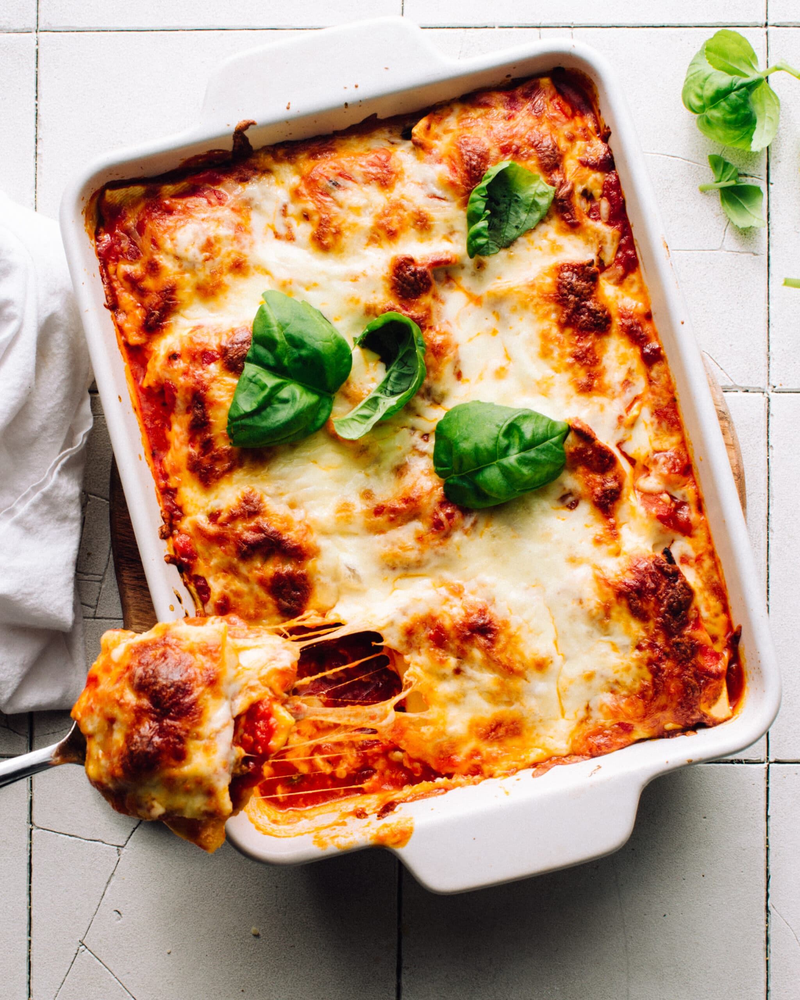

World's Best Lasagna Recipe

Yum! A delicious dinner idea for you and your family to enjoy! Try out this recipe for yourself!
Need a dinner that surprises even your italian grandma? Don't even have an italian grandma? Not to worry! Whether your grandma is italian or not, you'll love this amazing feta and spinach lasagna that is sure to be a crowd pleaser.Here's the recipe down below:
Ingredients
- 1 pound of lean ground beef
- 1/2 cup minced onion
- 2 cloves of garlic
- 1 can of crushed tomatoes
- 1 teaspoon of dried basil
- 12 lasagna noodles, cooked
- 1 pound of mozarella cheese
- 1/2 cup of grated parmesan cheese
Directions
- In a large pot, cook ground beef, onions, and garlic over medium heat until well browned. Stir in crushed tomatoes and water. Season with basil, salt, pepper, and sugar. Simmer for about 1 hour and cover with a lid.
- Preheat oven to 375 degrees F.
- Assemble your lasagna by spreading 1 cup of meat sauce in the bottom of a 9x12-inch baking dish. Arrange your cooked noodles lengthwise over meat sauce. SPread one half of rocotta cheese mixture. Top with a third of mozzarella cheese slices. Spoon 1 cup of meat sauce over the cheese and sprinkle 1/4 cup of parmesan cheese on top. Repeat layers and top off with mozzarella cheese and parmesan cheese. Cover with foil: to prevent sticking, either spray foil with cooking spray, or make sure the foil does not touch the cheese.
- Bake in preheated oven for 25 minutes. Remove foil, and bake an additional 25 minutes. Cool for 15 minutes before serving.